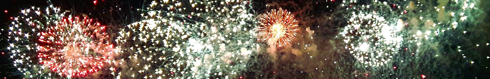

CANNES
- 
Mijn allerlaatste bestemming deze zomer was het zonnige Cannes aan de kust van Frankrijk. Dit was een trip met de hele familie, dus was het een stuk minder sight-seeing en een stuk meer relaxen op het strand en aan het zwembad. Perfect om mee af te ronden! We hadden ook nog enorm veel geluk dat we een speciale vuurwerk show mee mochten maken, op het strand. In de tweede week dat we hier waren gingen we ook nog op bezoek bij familie die in Mouans Sartoux woont. Ons laatste avontuur was een bezoekje aan de parfumfabriek van Grasse, waar we nogal wat souvenirtjes van meegenomen hebben.